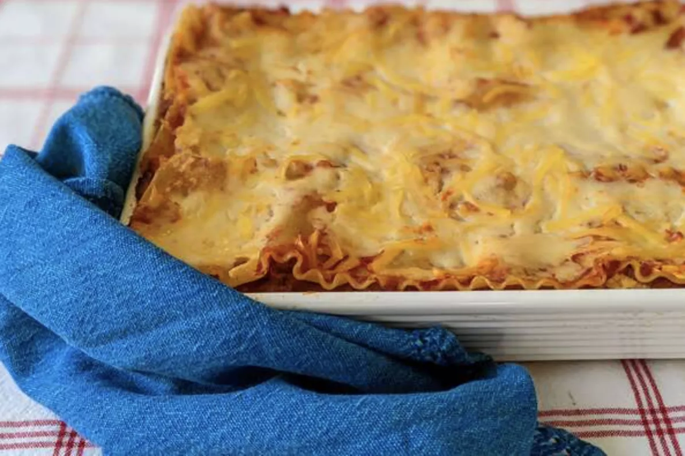

Lasagna

Description
Lasagna is an excellent pasta made up of several layers of pasta with
meat and various other goodies in betwean.
Ingredients
- Meat: 1/2 pound ground pork, 1/2 pound lean ground beef.
- Onion: 1 diced.
- Canned tomatoes: 1 can.
- Fresh herbs: two tablespoons chopped parsley, one crushed clove garlic.
- Sugar: a dash.
- Spices and seasonings: dried basil, dried oregano, salt, and black pepper.
- Noodles: uncooked or oven-ready lasagna noodles.
- Cheese: cottage cheese, Parmesan, and shredded mozzarella.
- Eggs
Steps
- Cook the meat: Cook the ground meat in a skillet until browned and crumbly. Add the onion and continue cooking until it's translucent. Stir in the canned tomato products, half of the parsley, garlic, basil, 1.5 teaspoons of salt, oregano, and sugar.
- Cook the noodles: Boil the lasagna noodles in lightly salted water until they're al dente.
- Make the cheese layer: Mix cottage cheese, Parmesan cheese, eggs, the remaining parsley, the remaining salt, and pepper in a bowl.
- Assemble the lasagna: Layer the ingredients according to the recipe (starting with sauce and ending with mozzarella) until the lasagna is assembled.
- In an oven preheated to 375 degrees F, this homemade lasagna should be perfectly baked in about 50 minutes (30-40 minutes covered, 5-10 minutes uncovered).
- Bake the lasagna: Cover with foil and bake in the preheated oven for about half an hour. Remove the foil and continue baking until the top is golden brown.